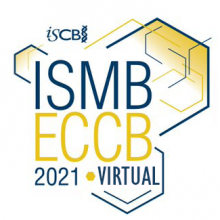

Instructor names and contact information
- Maria Doyle <Maria.Doyle at petermac.org>
- Stefano Mangiola <mangiola.s at wehi.edu.au>
Workshop package installation
For the ISMBECCB2021 workshop, an RStudio in the cloud will be provided with everything installed, all that participants will need is a web browser.
If you want to install the packages and material post-workshop, the instructions are below. The workshop is designed for R 4.1.
#install.packages('remotes')
# Need to set this to prevent installation erroring due to even tiny warnings, similar to here: https://github.com/r-lib/remotes/issues/403#issuecomment-748181946
Sys.setenv("R_REMOTES_NO_ERRORS_FROM_WARNINGS" = "true")
# Install same versions used in the workshop
#install.packages("remotes")
remotes::install_github(c("stemangiola/tidybulk@v1.4.0"", "stemangiola/tidySummarizedExperiment@v1.2.0", "stemangiola/tidySingleCellExperiment@v1.3.0"))
# Install workshop package
remotes::install_github("stemangiola/ismb2021_tidytranscriptomics", build_vignettes = TRUE)
# To view vignettes
library(ismb2021tidytranscriptomics)
browseVignettes("ismb2021tidytranscriptomics")To run the code, you could then copy and paste the code from the workshop vignette or R markdown file into a new R Markdown file on your computer.
Workshop Description
This tutorial will present how to perform analysis of single-cell and bulk RNA sequencing data following the tidy data paradigm. The tidy data paradigm provides a standard way to organise data values within a dataset, where each variable is a column, each observation is a row, and data is manipulated using an easy-to-understand vocabulary. Most importantly, the data structure remains consistent across manipulation and analysis functions.
This can be achieved with the integration of packages present in the R CRAN and Bioconductor ecosystem, including tidyseurat, tidySingleCellExperiment, tidybulk, tidyHeatmap and tidyverse. These packages are part of the tidytranscriptomics suite that introduces a tidy approach to RNA sequencing data representation and analysis.
Pre-requisites
- Basic knowledge of RStudio
- Some familiarity with tidyverse syntax
- Some familiarity with bulk RNA-seq and single cell RNA-seq
Recommended Background Reading Introduction to R for Biologists
Workshop Participation
The workshop format is a 4 hour session consisting of hands-on demos, exercises and Q&A.
R / Bioconductor packages used
- tidybulk
- tidyseurat
- tidyHeatmap
- limma
- edgeR
- DESeq2
- airway
- org.Hs.eg.db
- ggrepel
- GGally
- plotly
Time outline
Guide
| Activity | Time |
|---|---|
| Part 1 Bulk RNA-seq Core | |
| Hands-on Demos + Exercises | 90m |
| Differential gene expression | |
| Cell type composition analysis | |
| Break | 30m |
| Part 2 Single-cell RNA-seq | |
| Hands-on Demos + Exercises | 90m |
| Single-cell analysis | |
| Pseudobulk analysis | |
| Q&A | 30m |
| Total | 240m |
Workshop goals and objectives
In exploring and analysing RNA sequencing data, there are a number of key concepts, such as filtering, scaling, dimensionality reduction, hypothesis testing, clustering and visualisation, that need to be understood. These concepts can be intuitively explained to new users, however, (i) the use of a heterogeneous vocabulary and jargon by methodologies/algorithms/packages, (ii) the complexity of data wrangling, and (iii) the coding burden, impede effective learning of the statistics and biology underlying an informed RNA sequencing analysis.
The tidytranscriptomics approach to RNA sequencing data analysis abstracts out the coding-related complexity and provides tools that use an intuitive and jargon-free vocabulary, enabling focus on the statistical and biological challenges.